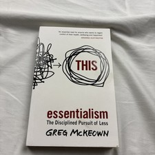

Library › Productivity
Essentialism — Summary & Key Lessons

The disciplined pursuit of less — if you don't prioritize your life, someone else will.
📖 OPEN THE FULL INTERACTIVE BREAKDOWN →🌐 Read it in Hindi, Hinglish, Gujarati, Tamil & 22 more languages — free, with audio.
💡 The Big Idea
The non-Essentialist believes 'I have to,' 'it's all important,' and 'I can do both' — and ends up making a millimeter of progress in a million directions. The Essentialist replaces this with three core truths: 'I choose to,' 'only a few things really matter,' and 'I can do anything but not everything.' McKeown's method is a repeating cycle: EXPLORE (create space to escape and evaluate options — paradoxically, Essentialists explore MORE options than others, but commit to almost none), ELIMINATE (cut the good to make room for the great: the 90% rule, graceful no's, uncommitting from sunk costs), and EXECUTE (build systems — buffers, routines, small wins — that make the vital few happen almost automatically). The price of not choosing: someone else — boss, inbox, culture — will choose for you.
🧠 The 4 Key Lessons
Lesson 1: The Essentialist Mindset: Choose, Discern, Trade Off
Part 1: Essence
Three realities the non-Essentialist denies: CHOICE (we can't control options, but we always control how we choose among them — forget this and you become 'a function of other people's choices'); NOISE (almost everything is noise — the law of the vital few applies to efforts, relationships, and opportunities: a tiny fraction produces nearly all the value, so working MORE is often a way of avoiding the harder task of discerning WHAT); and TRADE-OFFS (you cannot have it all — every yes is a thousand nos, and pretending otherwise doesn't escape trade-offs, it just surrenders them to circumstance; the strategic question isn't 'how can I do both?' but 'which problem do I want?'). The pathology McKeown names: success itself breeds non-Essentialism — success creates options and obligations, which fragment the focus that created the success. The undisciplined pursuit of more becomes the catalyst of decline.
📖 Example: McKeown's founding scene: hours after his daughter's birth, he left the hospital for a client meeting his colleague implied was essential — and the meeting achieved nothing except teaching him the book's thesis: 'if you don't prioritize your life, someone… Read the full example →
⚡ Do this: Restore the singular: write your one priority for this season of life and work. Then run the trade-off audit on this week's calendar: for each major commitment, name what it silently said no to — and check whether you'd make that trade consciously.
Lesson 2: Explore: Escape, Play, Sleep, and the 90% Rule
Part 2: Explore
Paradox: Essentialists explore MORE options than non-Essentialists — but as a discipline, not a lifestyle: broad, deliberate scanning before near-total commitment. The exploration toolkit: ESCAPE (schedule blank space to think — Bill Gates' 'Think Weeks' twice yearly, or one hour of unscheduled reading each morning; without space to focus, discernment is impossible); LOOK for the signal (journal like an analyst — scan your entries for the lead you're burying in your own life); PLAY (not frivolous — play broadens option-perception and is where the mind rehearses novel combinations); SLEEP (the non-Essentialist trades sleep for hours and loses both — one hour more sleep often equals several more hours of productivity; the ultra-performers protect it like an asset); and the SELECTION filter: the 90% RULE — score any option 0–100 on your single most important criterion; anything below 90 is a zero. 'If it isn't a clear yes, then it's a clear no' — because accepting a 70 costs you the slot the 95 needed.
📖 Example: Gates' Think Weeks are the escape exhibit: at the height of Microsoft's intensity, one week twice a year, alone with papers and books — several of the company's pivotal directional calls trace to those cabins. The 90% rule's origin is personal: McKeown… Read the full example →
⚡ Do this: Book your escape: one protected thinking hour weekly (no inputs, one notebook) and one half-day 'think retreat' this quarter. Then install the 90% rule on the next three opportunities: define the single criterion, score honestly, and let everything under 90 be zero.
Lesson 3: Eliminate: The Courage of the Graceful No
Part 3: Eliminate
Clarity without courage is decoration. The elimination arsenal: CLARIFY the essential intent (one decision that eliminates a thousand — a concrete, inspiring objective like 'get everyone in the UK online by 2012' beats vague mission-statement mush); learn the SLOW YES and QUICK NO — separate the relationship from the decision (you're declining the request, not the person), remember that the fleeting awkwardness of no beats the long resentment of a surrendered yes, and stock the repertoire (the pause, 'let me check my calendar,' 'yes — what should I deprioritize?', the counter-offer); UNCOMMIT from sunk costs (beware the endowment effect — ask 'if I weren't already invested, what would I pay to get in?'; kill zombie projects with reverse pilots: quietly stop and see if anyone notices); EDIT life like a film (cutting is craft, not loss — the best editors remove good scenes to serve the story); and set BOUNDARIES (your limits, communicated in advance, don't reduce freedom — they're its source; and other people's emergencies are not automatically your priorities).
📖 Example: The no gallery: Nancy Reagan's era aside, McKeown's best exhibit is the graphic designer Paul Rand-school story pattern — professionals whose reputations ROSE with each principled refusal, because the no signaled a standard. The 'yes, what should I… Read the full example →
⚡ Do this: Write your essential intent in one sentence (concrete + inspiring). Deliver two graceful no's this week using the repertoire. And run one reverse pilot: pick a recurring task you suspect is theater, stop it silently, and count the days until anyone asks.
Lesson 4: Execute: Buffers, Routines, and the Power of Small Wins
Part 4: Execute
The non-Essentialist executes by force — heroics, all-nighters, willpower. The Essentialist builds a SYSTEM where the essential flows by default: BUFFER everything (add 50% to every time estimate — the planning fallacy is universal; the prepared traveler with margin beats the optimized one in every real world); remove OBSTACLES like a bottleneck engineer (ask 'what's the one thing slowing everything else?' and clear it first — often it's a person to wait on, a decision unmade, or your own perfectionism); accumulate SMALL WINS (progress is the most powerful motivator — start small, celebrate visibly, and let momentum compound; the two-minute start beats the grand plan); build ROUTINES that enshrine the essential (same time, same trigger, decision-free — genius operates from habit's scaffolding: 'routine, in an intelligent man, is a sign of ambition'); and live in the NOW (the Greek 'kairos' — the opportune moment — is only visible to those not mentally triaging the past and future). The endgame is identity: not doing Essentialism, but BEING an Essentialist — where the disciplined pursuit of less becomes the default answer, and life feels, in McKeown's word, effortless.
📖 Example: The buffer exhibit: McKeown coaching executives who scheduled back-to-back then lived in permanent crisis — versus the ones who booked 50% margins and were mysteriously 'lucky' with punctuality, quality, and calm. The small-wins case is the famous police… Read the full example →
⚡ Do this: Add the 50% buffer to every estimate this week — travel, projects, meetings — and log the difference in stress. Identify your current bottleneck ('what one obstacle, removed, unblocks the rest?') and clear it before touching anything else. Then wrap your #1 essential activity in a fixed daily routine: same trigger, same time, no vote.
✅ 5-Step Action Plan
- Restore the singular priority; audit the week's silent trade-offs.
- Protect the weekly thinking hour; apply the 90% rule three times.
- Deliver two graceful no's; run one reverse pilot.
- Buffer all estimates by 50%; clear the single bottleneck.
- Routinize the vital one; let identity replace effort.
💬 Best Quotes from Essentialism
- “If you don't prioritize your life, someone else will.”
- “Remember that if you don't prioritize your life someone else will.”
- “The word priority came into the English language in the 1400s. It was singular. It meant the very first or prior thing. Only in the 1900s did we pluralize it.”
Interactive version: mark lessons as read, listen in your language, share quote cards.